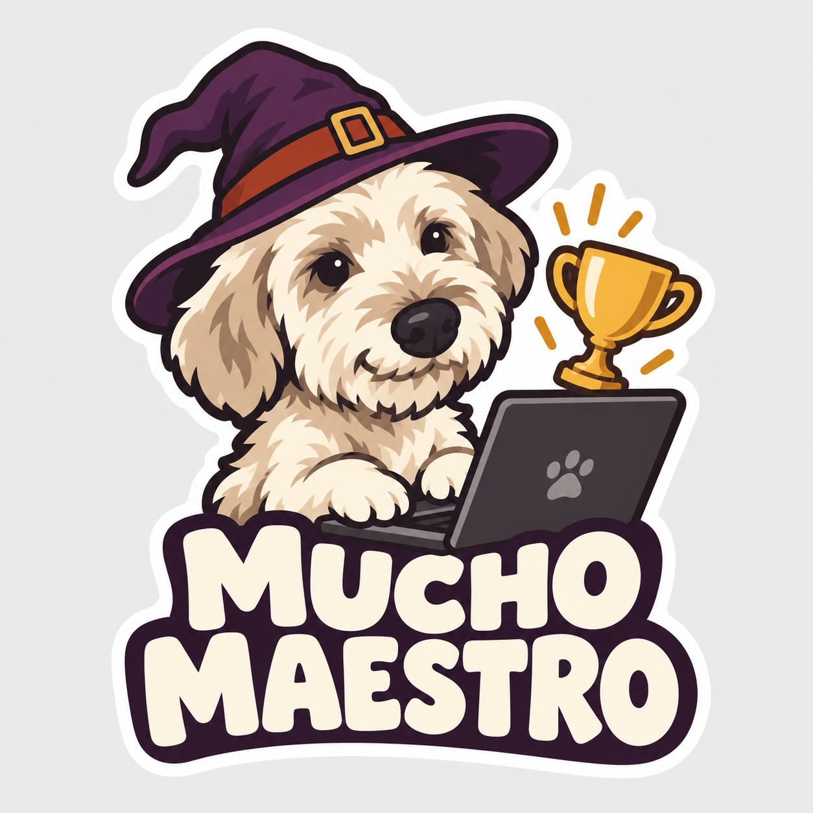
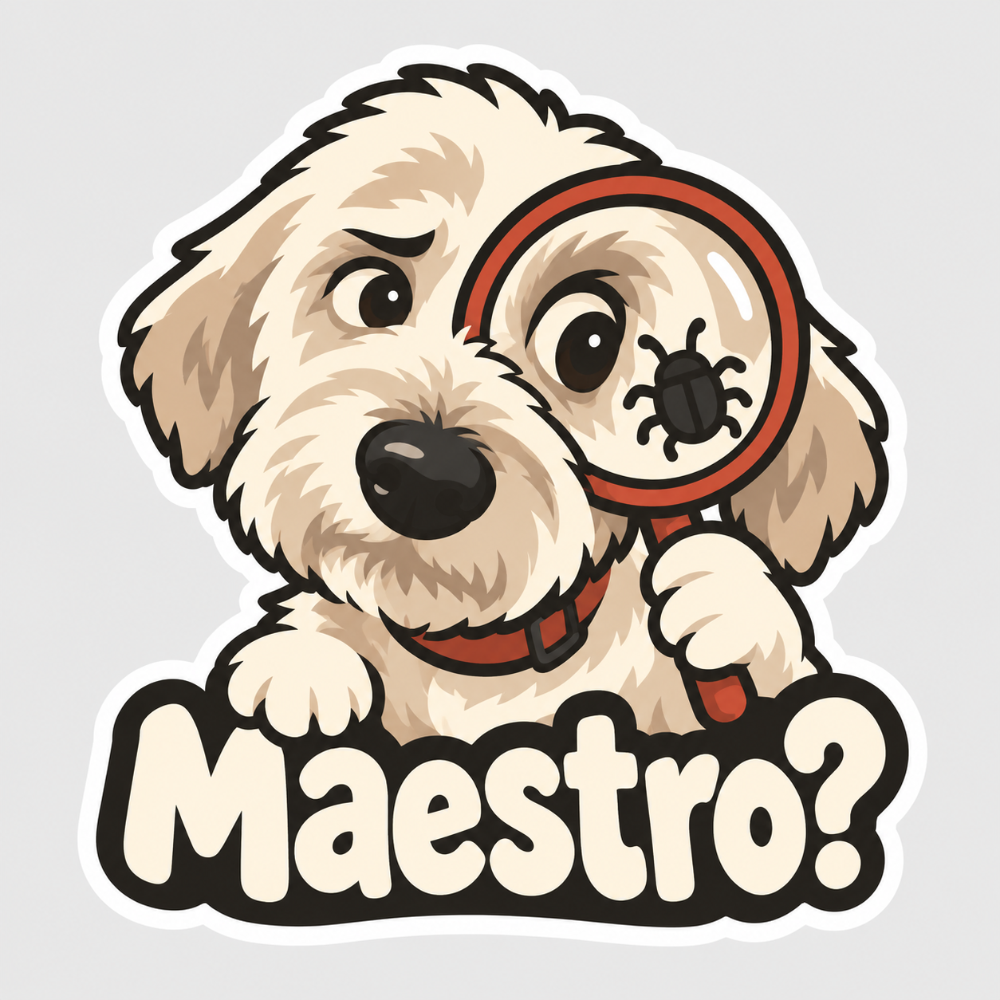
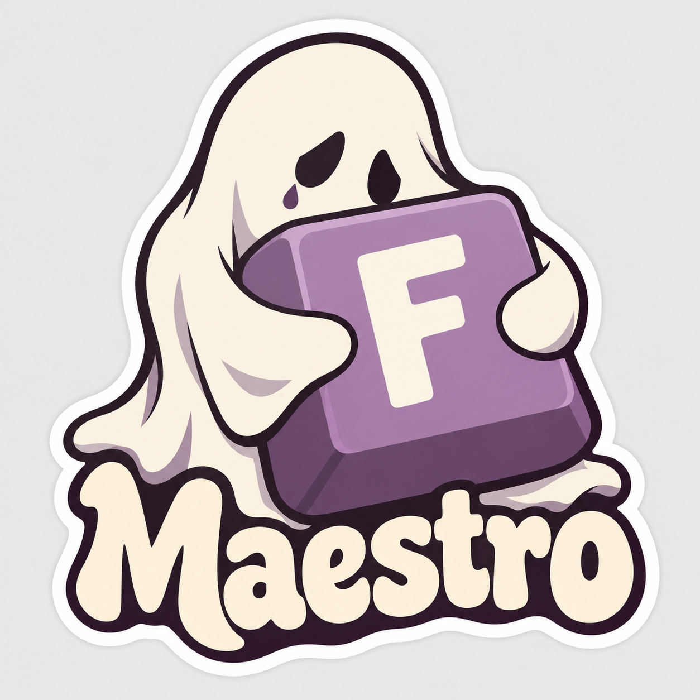
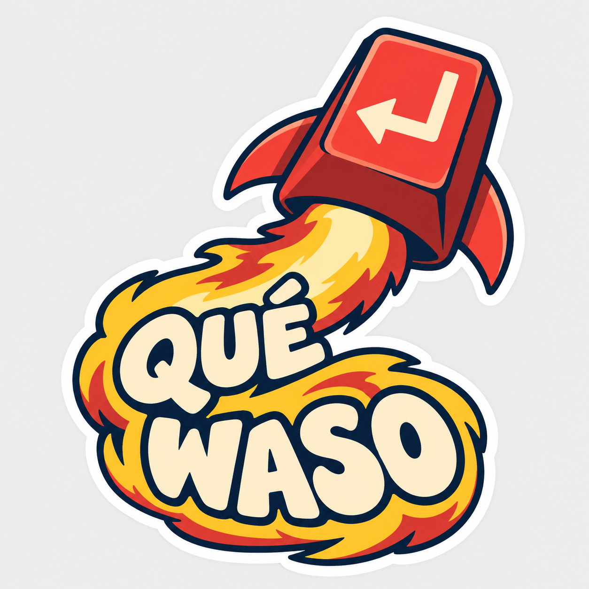
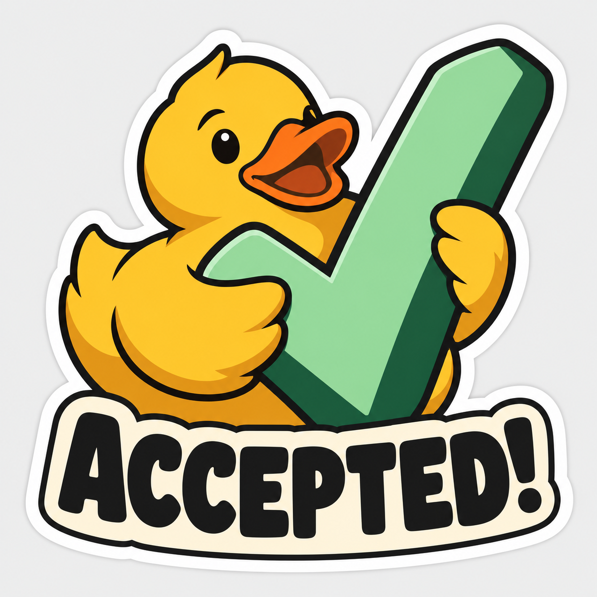
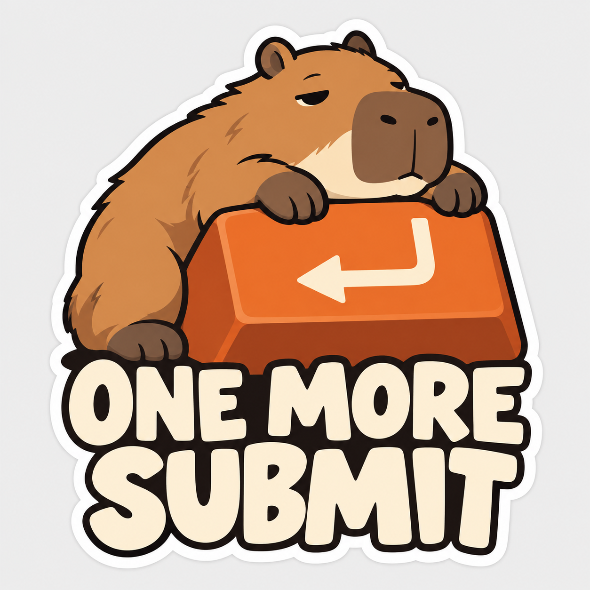
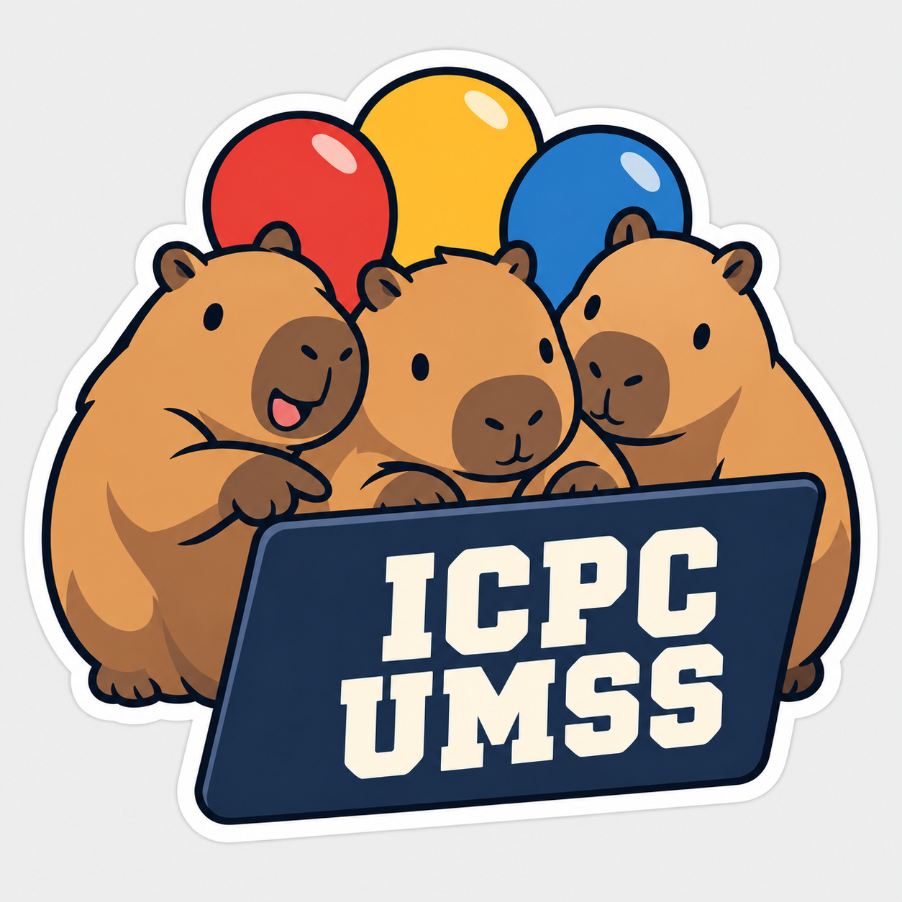
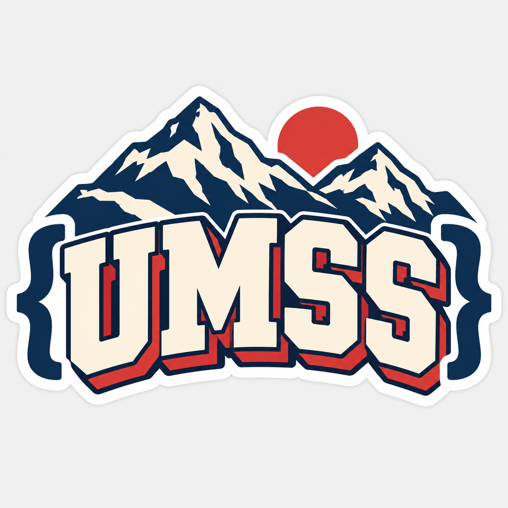

Ocho propuestas nuevas. Haz clic en una imagen para abrir el PNG.
Ocho propuestas ilustradas. Favoritas para regalar: Accepted!, One More Submit e ICPC UMSS. PNG de presentación con fondo gris; preparación de impresión pendiente.

Perrito mago · 6–8 cm

Detective de bugs · 6 cm

Un abrazo al submit caído · 4–6 cm

Enter a toda potencia · 6 cm

Patito de debugging · 4–6 cm

Una última submission · 6 cm

Tres compañeros, una laptop · 6–8 cm

Letras, código y montaña · 4–6 cm